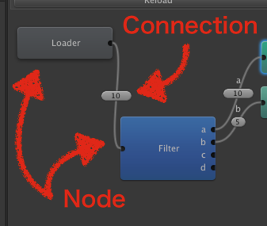

UnityEditorのUndo/Redoシステムについて【解決編】【最新】のコピーそして完結
概要
んっと
これの続き。
http://sassembla.github.io/Public/2015:09:15%2020-56-09/2015:09:15%2020-56-09.html
以下の条件下であれば、ScriptableObjectを自分で用意しないでもUndo/Redoの完璧な追跡ができる感じだった。
1.EditorWindowを使う
2.EditorWindowのインスタンスをUndo/Redoの対象とする
3.Undo/Redoしたいものに [Serializable] か [SerializeField] 句をセットする
4.複数の箇所から参照される要素はどちらかをプリミティブなものにする
実際にAssetGraphの実装でこのUndoの仕組みを使っているが、
無茶苦茶シンプルなコードでうまくいきそう。
順に条件の内容を追っていく。
1.EditorWindowを使う
うん、GUI作るときは使うよね。
2.EditorWindowのインスタンスをUndo/Redoの対象とする
EditorWIndowのインスタンスはUnityが管理してくれてる。
ScriptableObjectのSubClassだけど、フラグ指定してあるので変なタイミングでnullになったりすることは無い。
んで、ScriptableObjectのSubClassなので、Undo.RecordObjectに使用できる。
Undoしたい変化を行う前に、WindowEditor内で、
Undo.RecordObject(this, "Move Tack");
引き続いてUndoしたい変化を書く。
それだけ。
WindowEditorが保持してるListに対してのAddだろうが、RemoveAtだろうが、なんでもなんとかしてくれる。
前の記事で書いてたみたいな自前記録はまったく必要なかった。(どっかミスってて反映されてなかったんだと思う。)
3.Undo/Redoしたいものに [Serializable] か [SerializeField] 句をセットする
EditorWindowのクラスに含まれているものの中で、必要な要素にだけつける。
たとえば
public List<AutoComponent> autos = new List<AutoComponent>();
みたいなのをUndo/Redo可能にしたい場合は、
[SerializeField] public List<AutoComponent> autos = new List<AutoComponent>();
まあ、、当たり前だよな、、みたいな気持ちが出てくるが、SerializeFieldつけるだけで追跡してくれる。
この場合はAutoComponentっていう自作クラスを対象にしているので、AutoComponentクラス内のUndo/Redo対象にしたいものにもSerialize句をセットする簡単なお仕事が出る。
クラス定義箇所にSerializable句、
[Serializable] public class AutoComponent
あとクラス内の追跡したい項目にはSerializeField句を付ける。
[SerializeField] private bool active;
自分は趣味でprivateとかの前にしてるけど、宣言の真上でももちろん効く。
[SerializeField]をつけたものがさらに内部にパラメータをもっている場合、それらにも、、っていう感じになる。
このあたりの理屈はUnityの中の人が書いてくれてる素晴らしい本があるのでそのへんが大変参考になった。
Editor拡張入門
http://anchan828.github.io/editor-manual/
このへんの属性をつけるにあたって、入れ子になってるのがガンガン続く場合かなり面倒だけど、
そこかしこでScriptableObjectを継承しまくってパラメータありコンストラクタが全く使えないよかメンテコスト的に劇安い。。
4.複数の箇所から参照される要素はどちらかをプリミティブなものにする
文面からだけだとなんのこっちゃと。
たとえばこんな感じの構造があったとする。
EditorWindow
├ List<Node> nodes
└ List<Connection> connections
Nodeはノードウィンドウ一つ一つの型、ConnectionはNodeの間をつなぐ接続線。

ここで、Connectionの中に特定のNodeへの参照をNode startPoint とかの形で保持、とかやってると、
ConnectionのUndo/Redo時に困る。
たとえば次みたいなコードがある場合だ。
Connection.cs
[SerializeField]Node startPoint;
何が起きるか。
具体的には、いつか、GUI上でNode間にConnectionを追加したあと、Undo -> Redoで再生成されるConnectionの中には、
「Connectionの中のNodeの参照」があり、こいつの存在のせいで動作がややこしいことになる。
値は保っているんだけど、「作り出してしまう」ので、
・上位階層から見たら孤立したNodeインスタンスが一個できる感じになる
・Connection内から見たら、パラメータは全部合ってるんで異変に気付けない
というワンダーランドができてしまう。
なので、出来るだけ相互参照する要素の内容を小さくする、、みたいな原則を守るようにして、
Connectionの中でNodeの参照を保持
↓
Connectionの中でNodeのId(string)を保持
Connection.cs
[SerializeField]string startPointNodeId;
というように変更すると、stringがどう生成されようがNodeのインスタンスが生成されるわけではないので、
問題なくUndo/Redoが発生させられる。
まあそうしとくべきだったねみたいなところがある。idでコントロールしてて本当によかった。設計の勝利だ。